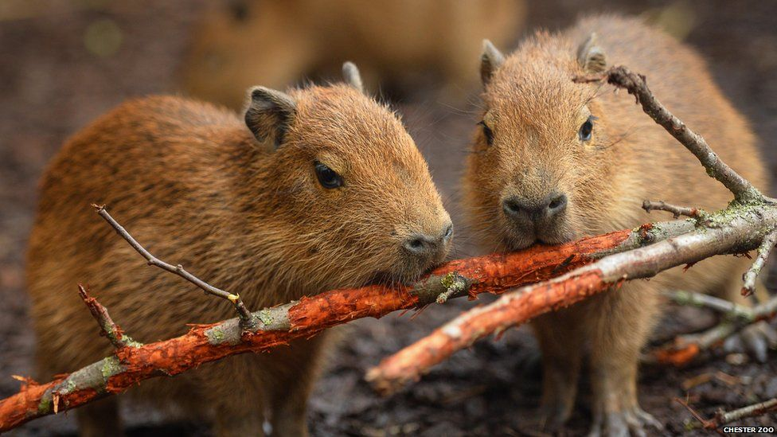
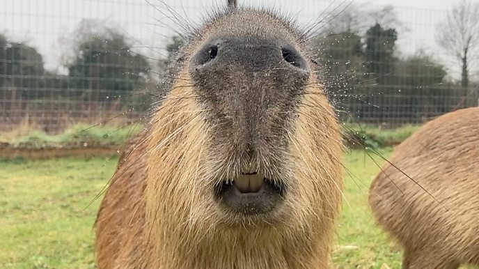
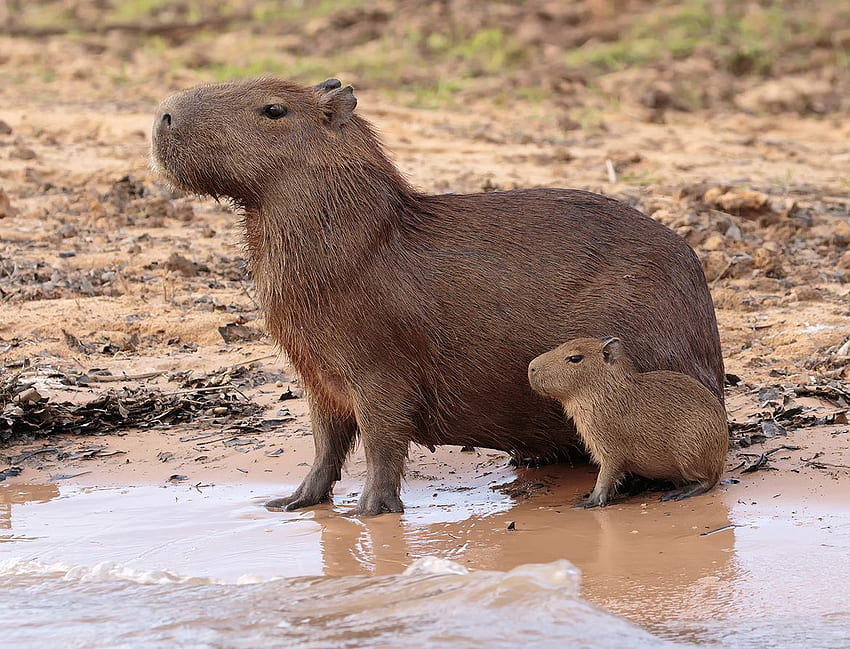

Capybara Exhibit

Over Capybaras
Capibara's zijn de grootste levende knaagdieren ter wereld. Ze komen oorspronkelijk uit Zuid-Amerika en staan bekend om hun semi-aquatische levensstijl. Het zijn sociale dieren die vaak in grote groepen in de buurt van water leven.
Fun Facts
- Capibara's zijn uitstekende zwemmers en kunnen enkele minuten onder water blijven.
- Ze hebben zwemvliezen, waardoor ze goed kunnen zwemmen.
- Capibara's zijn herbivoren die zich voornamelijk voeden met grassen en waterplanten.
- Ze zijn vriendelijk en volgzaam van aard en staan vaak toe dat andere dieren op ze gaan zitten.
Beschermingsstatus
Capibara's staan op de rode lijst van bedreigde diersoorten van de IUCN. Hun habitatverlies en de jacht vormen in bepaalde regio's een lokale bedreiging.
Bezoek de Exhibit
Als je gefascineerd bent door capibara's, kom dan naar onze zoo. Je krijgt de kans om deze deze verbazingwekkende wezens van dichtbij te bekijken en meer te leren over hun unieke eigenschappen.
Onze Capybara's

Flapoor

Baba

Hulk